in Vision-Language-Action Models
$w^{2}$VLA presentation video.
All models, including state-of-the-art baselines $\pi_{0.5}$ and OTTER, perform remarkably well when executing skills on the exact objects they were trained on. Select a scenario below to compare model rollouts.
When asked to transfer a learned skill to a different object, baseline models fail catastrophically. They recede to imitating the skill that was originally paired with the target object during training. w²VLA successfully isolates procedural intent to transfer the skill.
Breakdown of average performance scores: Results from OTTER, $\pi_{0.5}$, and w²VLA in-domain, i.e., on seen (skill, object) pairs, and on skill transfer. The metrics "object", "skill", and "task" correspond to the success of the models in selecting the correct object, executing the correct skill, and fully completing the task, respectively.
We re-evaluated the setup by introducing 3-5 random, visually diverse distractor items to the scene. Thanks to the isolated "where" conditioning powered by VLM localization heatmaps, w²VLA confidently ignores clutter and correctly executes the requested skill.
(Move Back, 🍌)
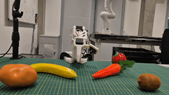
(Move Back, 🥕)
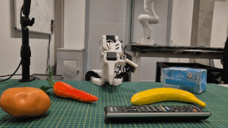
(Rotate, 🍌)
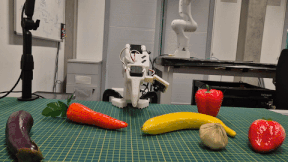
(Rotate, 🍌)
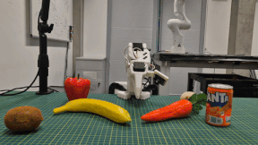
Picked mid-air
(Rotate, 🥕)
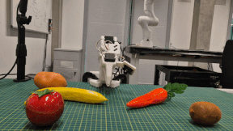
(Rotate, 🥕)
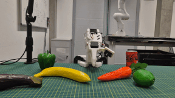
Grasping slipped
We challenged the policy to interact with completely novel objects (e.g., Coca-Cola cans, strawberries) that were not present in the demonstration dataset. w²VLA retains high accuracy in object selection and faithfully outputs the commanded behavior.
(Place Bowl, 🥤)
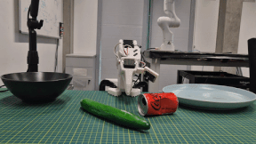
(Place Plate, 🍋)
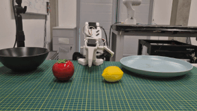
(Place Bowl, 🥤)
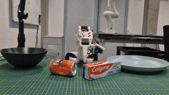
(Place Bowl, 🍓)
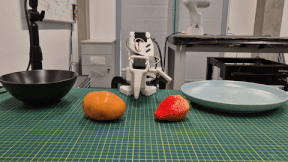
(Place Plate, 🥒)
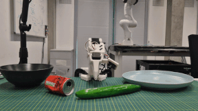
Failed to pick
(Place Plate, 🥔)

Missed plate
Breakdown of robustness performance scores: (Left) Comparing Scenario 1 baseline against the introduction of visual distractors. (Right) Comparing Scenario 2 baseline against the introduction of completely unseen objects.
@article{TBA,
}